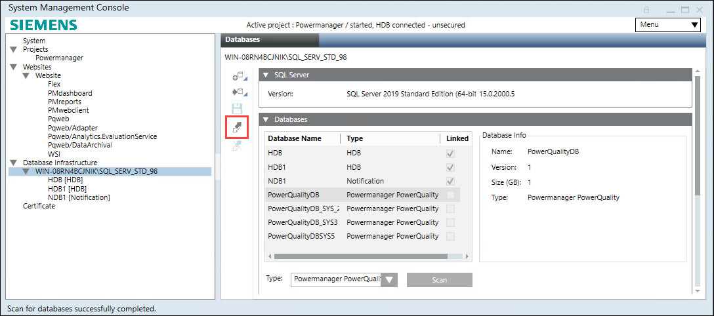
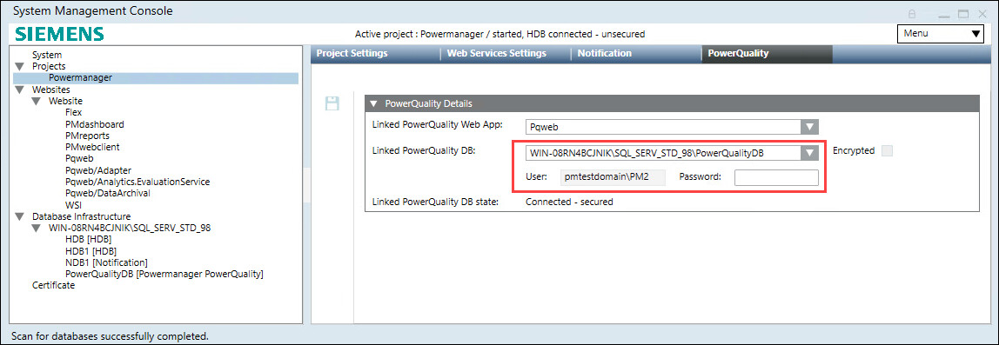
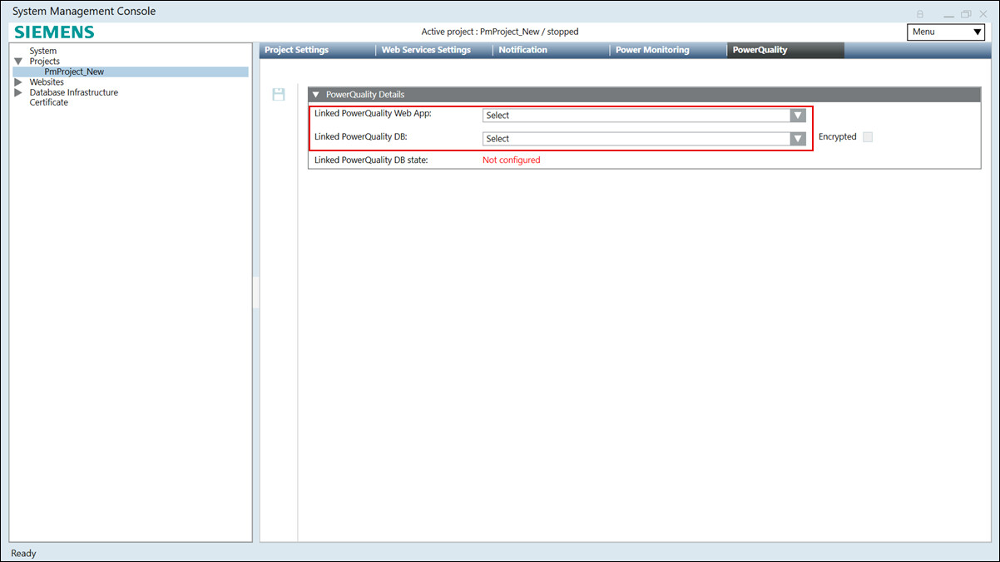

Link a PowerQuality Database to the Project
- In SMC tree, select the Database Infrastructure > [SQL Server name].
- Select the Databases tab.
- Navigate to Databases expander > Type, select Powermanager PowerQuality.
- Click Scan.
- Select the [PowerQualityDatabase name], and click Link
 .
. 
- Navigate to Projects > [project], select PowerQuality tab.
- Select created database for Linked PowerQuality DB dropdown menu.
NOTE: For remote PowerQuality database, encryption is not supported. - For remote database, enter database system credentials.
- Click Save
 .
.
- PowerQuality Database is linked to project.

NOTE: To unlink the PowerQuality Web App or the PowerQuality Database from the project, remove the Linked PowerQuality Web App and the Linked PowerQuality DB field values. If both the values are not removed, then the web app and database cannot be unlinked from the project and displays an error message.
